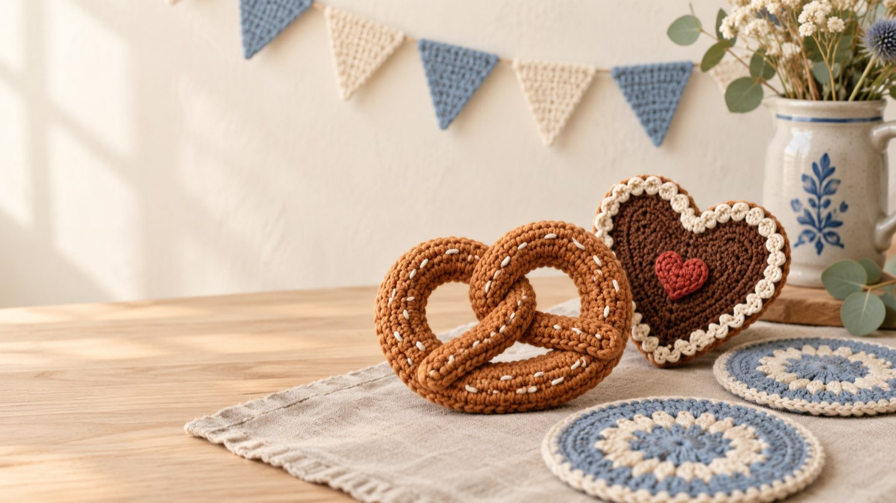
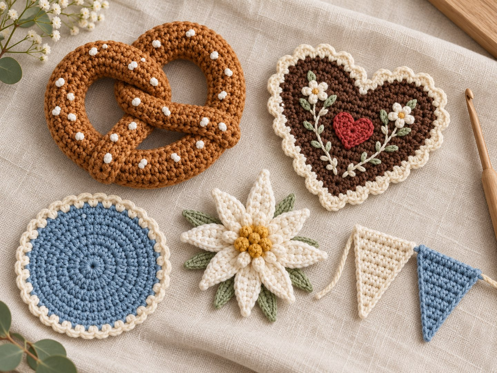
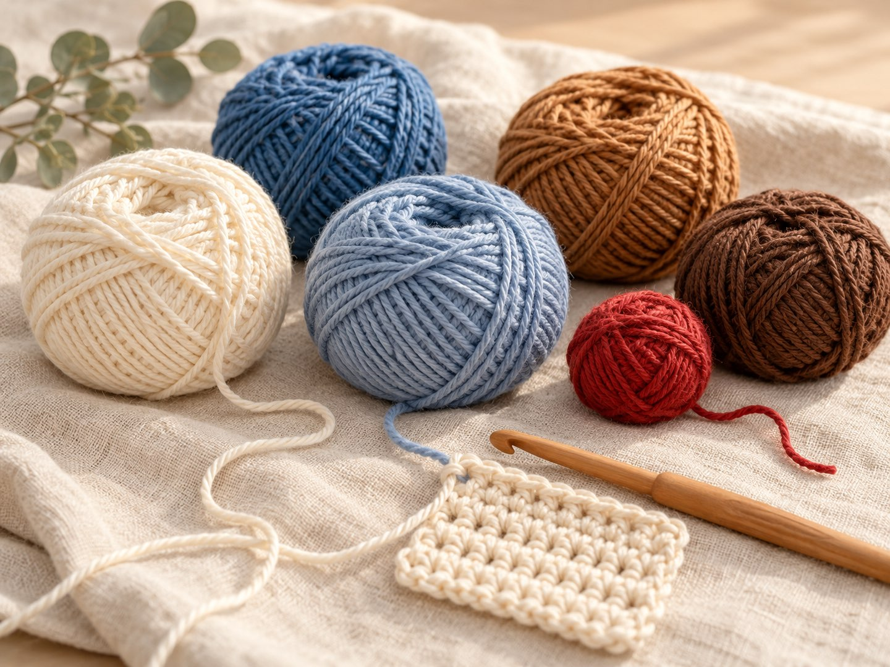
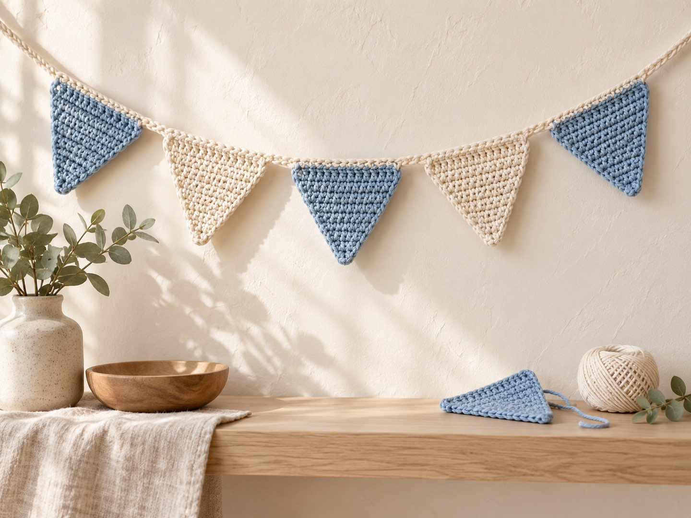
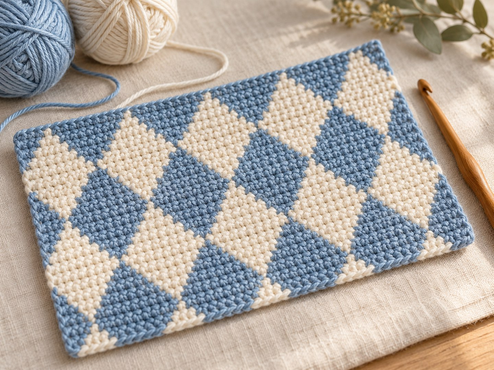
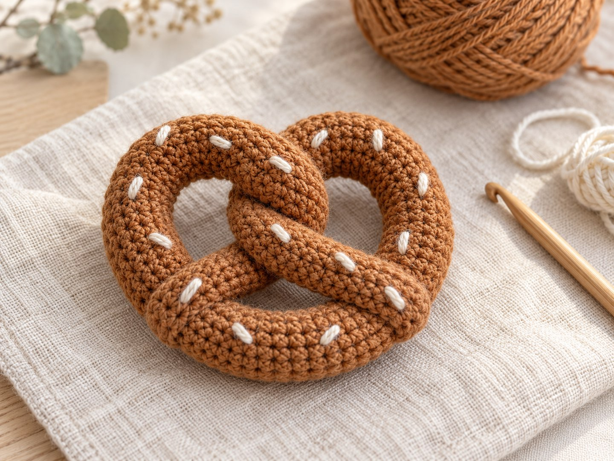

Oktoberfest häkeln: Brezel, Lebkuchenherz & Wiesn-Deko – plus Anleitung für eine Mini-Brezel

Kurz gesagt
Wiesn-Deko lässt sich wunderbar häkeln: Brezel, Lebkuchenherz, Maßkrug-Untersetzer, Edelweiß und eine blau-weiße Wimpelkette bestehen fast nur aus festen Maschen und sind ideal für Anfängerinnen. Die Farben: Blau und Weiß, dazu Brezelbraun, Creme und ein kräftiges Herzrot. Weiter unten findest du kostenlose Anleitungen für eine Mini-Brezel und einen Wimpel.
Das Oktoberfest 2026 läuft noch bis Sonntag, den 4. Oktober – höchste Zeit für ein bisschen Wiesn-Stimmung am Haken. Ich muss gestehen: Ich mag das Fest eher aus der Ferne, aber Brezel, Lebkuchenherz und das blau-weiße Rautenmuster sind für mich einfach perfekte Häkelmotive. Sie sind klein, schnell gemacht und sehen auch nach der Wiesn noch hübsch aus – zum Beispiel auf dem Herbsttisch, an der Tasche oder als Mitbringsel. Hier sind die Ideen und zwei kleine Anleitungen zum Nachhäkeln.
1. Welche Projekte passen zur Wiesn?

| Motiv | Warum es funktioniert | Niveau |
|---|---|---|
| 🥨 Brezel | Ein einfacher Schlauch aus festen Maschen, der zu einer Brezel gelegt wird | Anfänger |
| ❤️ Lebkuchenherz | Flaches Herz, die weiße Zuckerschrift wird aufgestickt | Anfänger+ |
| 🍺 Maßkrug-Untersetzer | Rund gehäkelt, in Blau-Weiß oder Brezelbraun | Anfänger |
| 🌼 Edelweiß | Kleine Blüte aus Blütenblättern, siehe Blüten & Blätter | Anfänger+ |
| 🔷 Wimpelkette | Kleine Dreiecke in Blau und Weiß, an einer Schnur aufgereiht | Anfänger |
Tipp: Fang mit der Brezel an. Sie braucht nur Magic Ring und feste Maschen – beides lernst du in den Häkel-Basics.
2. Welche Farben passen zum Oktoberfest?

- Weiß & Creme
- Bayerisch Blau
- Gedecktes Blau
- Brezelbraun
- Lebkuchenbraun
- Herzrot
Das klassische Bayerisch Blau mit Weiß ist knallig. Wer es ruhiger mag, nimmt ein gedecktes Blau und Creme statt reinem Weiß – dann wirkt die Deko modern und passt auch nach dem Fest noch in die Wohnung.
3. Wiesn-Deko selbst gehäkelt

Für eine kleine Wiesn-Ecke reichen drei Dinge: eine Wimpelkette in Blau und Weiß, ein paar Brezeln zum Aufhängen und zwei Maßkrug-Untersetzer. Alles zusammen ist an einem gemütlichen Abend fertig. Die Untersetzer häkelst du wie einen flachen Kreis – in jeder Runde so viele Zunahmen, wie du in der ersten Runde Maschen hattest. Wie das geht, steht in den Häkel-Basics.
Wenn du bei den Runden den Überblick behalten willst, hilft dir der Maschenzähler: Er zählt Reihen und Maschen mit und merkt sich deinen Stand.
4. Das Rautenmuster: Blau-Weiß für Fortgeschrittene

Das bayerische Rautenmuster besteht aus blauen und weißen Rauten im Wechsel. Gehäkelt wird es mit zwei Farben, zum Beispiel in Tapestry-Technik, bei der du den nicht benutzten Faden in den Maschen mitführst. Das ist eher etwas für Fortgeschrittene – für Anfängerinnen geht es einfacher mit einfarbigen Wimpeln, die du abwechselnd in Blau und Weiß häkelst.
Anleitung: Mini-Brezel

- Größe
- ca. 8 cm breit
- Zeit
- ca. 1,5–2 Stunden
- Niveau
- Anfängerin
- Garn
- Baumwolle in Karamell oder Brezelbraun (ca. 20 g), etwas Creme für die Salzkörner
- Zubehör
- Häkelnadel 2,5–3 mm, Füllwatte, Maschenmarkierer, Vernähnadel, optional Schlüsselring
Abkürzungen
MR = Magic Ring · fM = feste Masche · Abn = Abnahme (2 fM zusammen abmaschen) · Lm = Luftmasche. Alle Abkürzungen findest du in der Abkürzungs-Übersicht.
Gehäkelt wird in Spiralrunden. Markiere den Rundenanfang mit einem Maschenmarkierer.
Schlauch (Braun oder Karamell)
- MR mit 6 fM (6)
- Runde 2 bis zur gewünschten Länge: je 6 fM (6)
Häkle weiter, bis der Schlauch etwa 25 cm lang ist (die Rundenzahl hängt von deinem Garn ab, miss lieber nach). Fülle den Schlauch dabei in Abschnitten leicht mit Füllwatte – schieb sie mit einem stumpfen Stift nach. Faden abschneiden, durch die letzten 6 Maschen ziehen, festziehen und vernähen.
Brezel formen
- Den Schlauch zu einem U legen.
- Die beiden Enden zweimal übereinander kreuzen, wie bei einer Drehung.
- Die Enden nach unten auf den Bogen des U klappen und dort mit ein paar Stichen festnähen.
- An den Kreuzungen ebenfalls je ein, zwei Stiche setzen, damit die Form hält.
Salzkörner
Mit cremefarbenem Garn 8 bis 10 kleine Stiche gleichmäßig auf der Brezel verteilen. Fäden gut vernähen.
Als Taschenanhänger: Häkle oben an der Brezel eine Schlaufe aus 10 bis 12 Lm und befestige den Schlüsselring. Mehr zum Thema findest du im Beitrag Häkel-Taschenanhänger.
Anleitung: Wimpel für die blau-weiße Girlande
- Größe
- ca. 5 × 4 cm (je nach Garn)
- Zeit
- ca. 15 Minuten pro Wimpel
- Niveau
- Anfängerin
- Garn
- Baumwolle in Blau und in Weiß oder Creme
- 17 Lm häkeln.
- Ab der 2. Lm ab Nadel in jede Lm 1 fM (16)
- 1 Lm, wenden. Abn, 12 fM, Abn (14)
- 1 Lm, wenden. Abn, 10 fM, Abn (12)
- 1 Lm, wenden. Abn, 8 fM, Abn (10)
- 1 Lm, wenden. Abn, 6 fM, Abn (8)
- 1 Lm, wenden. Abn, 4 fM, Abn (6)
- 1 Lm, wenden. Abn, 2 fM, Abn (4)
- 1 Lm, wenden. Abn, Abn (2)
- 1 Lm, wenden. Abn (1)
Faden abschneiden und vernähen. Die Wendeluftmasche zählt nicht als Masche. Die Wimpel abwechselnd in Blau und Weiß häkeln und an einer Kordel oder einer Luftmaschenkette festnähen.
Noch mehr Herbstideen
Passend zum Herbst: Meine Kürbis-Anleitung und der Beitrag zu den Häkeltrends im Herbst 2026. Und wenn du es gruseliger magst, schau bei Halloween häkeln vorbei.
Und du? Brezel oder Lebkuchenherz? Zeig mir deine Wiesn-Deko auf Instagram oder TikTok! 🥨
Häufige Fragen zu Oktoberfest-Häkelprojekten
Wann ist das Oktoberfest 2026?
Das 191. Oktoberfest findet von Samstag, 19. September, bis Sonntag, 4. Oktober 2026 auf der Münchner Theresienwiese statt. Gehäkelte Wiesn-Deko passt aber auch zu Herbstfesten, Mottopartys und als Mitbringsel.
Welche Wiesn-Motive kann man häkeln?
Beliebt sind Brezel, Lebkuchenherz, Maßkrug-Untersetzer, Edelweiß und Wimpelketten im blau-weißen Rautenmuster. Die meisten davon bestehen aus einfachen festen Maschen und sind für Anfängerinnen geeignet.
Welche Farben passen zu Oktoberfest-Deko?
Typisch sind das bayerische Blau und Weiß, dazu Brezel- und Lebkuchenbraun, Creme und ein kräftiges Herzrot. Wer es ruhiger mag, nimmt ein gedecktes Blau statt Himmelblau.
Wie häkelt man eine Brezel?
Du häkelst einen dünnen Schlauch aus je 6 festen Maschen pro Runde, füllst ihn leicht, legst ihn zu einem U, kreuzt die Enden zweimal und nähst sie am Bogen fest. Zum Schluss stickst du kleine Salzkörner aus cremefarbenem Garn auf.
Welches Garn eignet sich für gehäkelte Brezeln?
Am besten glattes Baumwollgarn in Karamell oder Braun mit einer Nadel von 2,5–3 mm. Es behält die Form, und die Füllung scheint nicht durch.